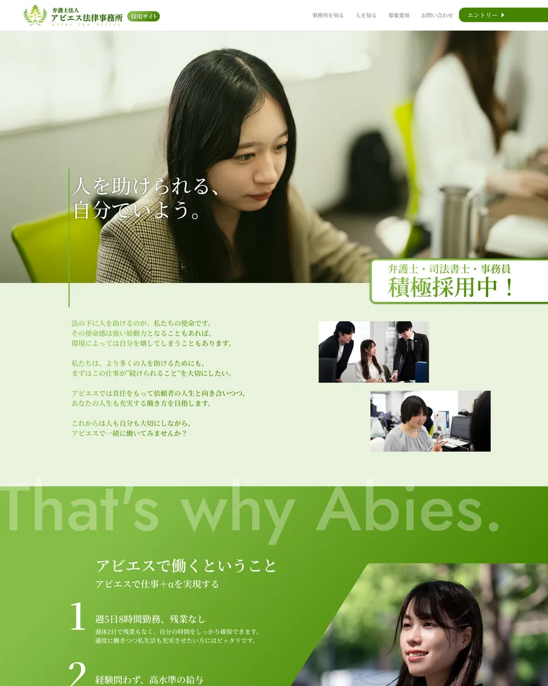

RECRUITMENT WEBSITE / 2025
Abies Law Office
Recruitment Website
担当 / ROLE
構成設計
Webデザイン
カテゴリー・制作年
採用サイト / 2025
制作範囲 / SCOPE
PC / SP・全9ページ

OBJECTIVE / 01
事務所の人柄と働き方を伝え、職種ごとの応募へ迷わずつなげる。
概要 / OVERVIEW
弁護士法人アビエス法律事務所の採用サイト。トップページから職種別の募集要項、事務所概要、代表紹介、応募フォームまで、採用に必要な情報を一つの体験として設計しました。
課題 / PROBLEM
専門性や信頼感を保ちながら、求職者が感じやすい堅さや距離感をやわらげること。さらに、複数職種の条件を整理し、必要な情報へ短い導線で到達できる構成が求められました。
アプローチ / APPROACH
ブランドカラーのグリーンを軸に、職場写真と余白を大きく使って誠実で開かれた印象に。PCとSPそれぞれで情報密度を調整し、職種選択から応募完了まで一貫した視線の流れをつくりました。
FULL VIEW / 02
ページ全体